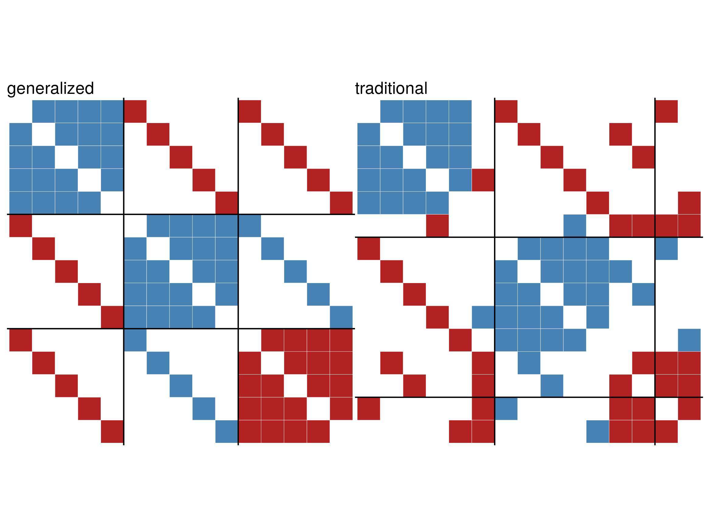

library(igraph)
library(signnet)
library(networkdata)9 Signed Networks
9.1 What are signed networks?
Traditional SNA usually deals with relations among entities (e.g. people) that are positive, including “friendship”, “advice seeking”, etc. Most network analytic tools are devised under this premise, be that centrality indices, clustering tools and so forth. But of course not all occurring relations are positive. People can be friends but also foes.
This gives rise to signed networks. These networks are usually composed of both, positive and negative, ties measured among a set of entities. Traditional network analytic tools are not applicable to such networks without adapting for negative ties.
The signnet package brings together methods that have been developed to analyse signed networks. This includes
- Structural balance
- Blockmodeling
- Centrality
- Signed two-mode networks
9.2 Data structures for signed networks in signnet
The foundation of signnet is provided by igraph. All functions in the package assume that an igraph object is a signed network if it has an edge attribute “sign” with values 1 (positive) or -1 (negative).
g <- graph.full(5, directed = FALSE, loops = FALSE)
E(g)$sign <- 1
gIGRAPH 34801ba U--- 5 10 -- Full graph
+ attr: name (g/c), loops (g/l), sign (e/n)
+ edges from 34801ba:
[1] 1--2 1--3 1--4 1--5 2--3 2--4 2--5 3--4 3--5 4--5All methods (should) throw an error if the sign attribute is missing or contains other values than -1 and 1.
Matrices associated with a signed network follow the igraph naming scheme. The signed adjacency matrix can be obtained with as_adj_signed().
data("tribes")
as_adj_signed(tribes)[1:5,1:5] Gavev Kotun Ove Alika Nagam
Gavev 0 1 -1 -1 -1
Kotun 1 0 -1 0 -1
Ove -1 -1 0 1 0
Alika -1 0 1 0 0
Nagam -1 -1 0 0 0The signed Laplacian matrix is obtained by laplacian_matrix_signed().
laplacian_matrix_signed(tribes)[1:5,1:5] Gavev Kotun Ove Alika Nagam
Gavev 8 -1 1 1 1
Kotun -1 8 1 0 1
Ove 1 1 6 -1 0
Alika 1 0 -1 3 0
Nagam 1 1 0 0 79.3 Datasets
The signnet package includes two well known example datasets.
The “tribes” dataset is a signed social network of tribes of the Gahuku–Gama alliance structure of the Eastern Central Highlands of New Guinea. The network contains sixteen tribes connected by friendship (“rova”) and enmity (“hina”).
The “cowList” dataset contains a list of 52 signed networks of inter-state relations over time (1946-1999). Two countries are connected by a positive tie if they form an alliance or have a peace treaty. A negative tie exists between countries who are at war or in other kinds of conflicts. The dataset is derrived from the correlates of war.
9.4 Structural Balance
The principles underlying structural balance are based on a theory in social psychology dating back to the work of Heider in the 1940s, which was generalized and extended to graphs by Cartwright and Harary in the 1950s. In its simplest form, it is defined via triangles. A triangle is balanced if all ties are positive (“the friend of a friend is a friend”) or only one tie is positive (“the enemy of my enemy is my friend”). The remaining configurations are said to be unbalanced.

A network is balanced if i.a., it can be partitioned into two vertex subsets, such that intra-group edges are all positive and inter-group edges are all negative.
A (random) balanced network can be obtained with the function sample_islands_signed() which is pretty much the same as sample_islands() from the igraph package.
g <- sample_islands_signed(islands.n = 2,islands.size = 10,
islands.pin = 0.8,n.inter = 5)(The function ggsigned() can be used to visualize signed networks. Note that this requires the package ggraph to be installed.) Increasing islands.n leads to “clusterable” networks as defined by Davis.
A balanced network only contains balanced triangles. This can be verified with count_signed_triangles().
count_signed_triangles(g)+++ ++- +-- ---
111 0 6 0 Note the absence of ++- and --- triangles.
To list all triangles use signed_triangles().
head(signed_triangles(g)) V1 V2 V3 P
[1,] 10 1 2 3
[2,] 10 1 9 3
[3,] 10 1 8 3
[4,] 10 1 7 3
[5,] 10 2 9 3
[6,] 10 2 8 3The column P indicated the number of positive ties in the triangle. A value of 3 indicates that the triangle is “+++”.
9.5 Balancedness
Determining if a network is balanced or not is easy, but measuring a degree of balancedness (i.e. how close is a network to be balanced?) is not. The package, so far, implements three methods to calculate balance scores. All are defined such that a value of one indicates perfect balance and zero perfect unbalance. Though for intermediate networks, results may vary significantly. Check the paper by Samin Aref (and his other work) for more details.
balance_score(g, method = "triangles")[1] 1balance_score(g, method = "walk")[1] 1balance_score(g, method = "frustration")[1] 1“triangles” returns the fraction of balanced triangles.
“walk” is based on eigenvalues of the signed and underlying unsigned network. Check the paper by Estrada for details.
“frustration” assumes that the network can be partitioned into two groups, where intra group edges are positive and inter group edges are negative. The index is defined as the sum of intra group negative and inter group positive edges. Note that the problem is NP complete and only an upper bound is returned (based on simulated annealing). The function frustration_exact() implements an integer program to solve the exact optimization problem. More details can be found in the work of Aref.
There disagreement for non-balanced networks can be seen with the included “tribes” dataset.
data("tribes")
balance_score(tribes, method = "triangles")[1] 0.867647balance_score(tribes, method = "walk")[1] 0.357576balance_score(tribes, method = "frustration")[1] 0.7586219.6 Triangles
The function triad_census_signed() calculates the signed triad census of a directed signed network. While the unsigned triad census has only 16 possible outcomes, there are 138 non-isomorphic signed triads, shown below.

The naming scheme is “xxx-yyyyyy” where “xxx” corresponds to the name of the respective unsigned triad and “yyyyyy” is a string of “0”, “N”, “P”, describing the type of ties present. So “300-NNNNNN” is a triad with all ties present and all ties are negative.
9.7 Traditional Blockmodeling
In signed blockmodeling, the goal is to determine k blocks of nodes such that all intra-block edges are positive and inter-block edges are negative. In the example below, we construct a network with a perfect block structure with sample_islands_signed(). The network consists of 10 blocks with 10 vertices each, where each block has a density of 1 (of positive edges). The function signed_blockmodel() is used to construct the blockmodel. The parameter k is the number of desired blocks. alpha is a trade-off parameter. The function minimizes \(P(C)=\alpha N+(1-\alpha)P\), where \(N\) is the total number of negative ties within blocks and \(P\) be the total number of positive ties between blocks.
g <- sample_islands_signed(10,10,1,20)
clu <- signed_blockmodel(g,k = 10,alpha = 0.5)
table(clu$membership)
1 2 3 4 5 6 7 8 9 10
10 10 10 10 10 10 10 10 10 10 clu$criterion[1] 0The function returns a list with two entries. The block membership of nodes and the value of \(P(C)\).
The function ggblock() can be used to plot the outcome of the blockmodel (ggplot2 is required).
ggblock(g,clu$membership,show_blocks = TRUE)
If the parameter annealing is set to TRUE, simulated annealing is used in the optimization step. This generally leads to better results but longer runtimes.
data("tribes")
set.seed(44) #for reproducibility
signed_blockmodel(tribes,k = 3,alpha=0.5,annealing = TRUE)$membership
[1] 1 1 2 2 3 2 2 2 3 3 2 2 3 3 1 1
$criterion
[1] 2signed_blockmodel(tribes,k = 3,alpha=0.5,annealing = FALSE)$membership
[1] 1 1 2 2 3 2 2 2 3 3 2 2 3 3 1 1
$criterion
[1] 29.8 Generalized Blockmodeling
The function signed_blockmodel() is only able to provide a blockmodel where the diagonal blocks are positive and off-diagonal blocks are negative. The function signed_blockmodel_general() can be used to specify different block structures. In the below example, we construct a network that contains three blocks. Two have positive and one has negative intra-group ties. The inter-group edges are negative between group one and two, and one and three. Between group two and three, all edges are positive.
g1 <- g2 <- g3 <- graph.full(5)
V(g1)$name <- as.character(1:5)
V(g2)$name <- as.character(6:10)
V(g3)$name <- as.character(11:15)
g <- Reduce("%u%",list(g1,g2,g3))
E(g)$sign <- 1
E(g)$sign[1:10] <- -1
g <- add.edges(g,c(rbind(1:5,6:10)),attr = list(sign=-1))
g <- add.edges(g,c(rbind(1:5,11:15)),attr = list(sign=-1))
g <- add.edges(g,c(rbind(11:15,6:10)),attr = list(sign=1))The parameter blockmat is used to specify the desired block structure.
set.seed(424)
blockmat <- matrix(c(1,-1,-1,-1,1,1,-1,1,-1),3,3,byrow = TRUE)
blockmat [,1] [,2] [,3]
[1,] 1 -1 -1
[2,] -1 1 1
[3,] -1 1 -1general <- signed_blockmodel_general(g,blockmat,alpha = 0.5)
traditional <- signed_blockmodel(g,k = 3,alpha = 0.5,annealing = TRUE)
c(general$criterion,traditional$criterion)[1] 0 6
9.9 Centrality
There exist dozens of indices for networks with positive ties, but for signed networks they are rather scarce. The package implements three indices so far. Versions of degree and eigenvector centrality, and PN centrality by Everett & Borgatti.
Degree centrality can be calculated in four different ways with degree_signed(), specified by the type parameter:
type="pos"count only positive neighborstype="neg"count only negative neighborstype="ratio"positive neighbors/(positive neighbors+negative neighbors)type="net"positive neighbors-negative neighbors
The mode parameter can be used to get “in” and “out” versions for directed networks.
The PN index is very similar to Katz status and Hubbell’s measure for networks with only positive ties. The technical details can be found in the paper by Everett & Borgatti.
The below example illustrates all indices with a network where signed degree can not distinguish vertices.
A <- matrix(c(0, 1, 0, 1, 0, 0, 0, -1, -1, 0,
1, 0, 1, -1, 1, -1, -1, 0, 0, 0,
0, 1, 0, 1, -1, 0, 0, 0, -1, 0,
1, -1, 1, 0, 1, -1, -1, 0, 0, 0,
0, 1, -1, 1, 0, 1, 0, -1, 0, -1,
0, -1, 0, -1, 1, 0, 1, 0, 1, -1,
0, -1, 0, -1, 0, 1, 0, 1, -1, 1,
-1, 0, 0, 0, -1, 0, 1, 0, 1, 0,
-1, 0, -1, 0, 0, 1, -1, 1, 0, 1,
0, 0, 0, 0, -1, -1, 1, 0, 1, 0),10,10)
g <- graph_from_adjacency_matrix(A,"undirected",weighted = "sign")
degree_signed(g,type="ratio") [1] 0.5 0.5 0.5 0.5 0.5 0.5 0.5 0.5 0.5 0.5eigen_centrality_signed(g) [1] 0.6221496 1.0000000 0.7451885 1.0000000 0.8999004 0.6428959 0.3582816
[8] 0.3747192 0.2808741 0.0783457pn_index(g) [1] 0.900975 0.861348 0.907700 0.861348 0.841066 0.849656 0.861732 0.901591
[9] 0.850985 0.907293Note that PN centrality and eigenvector centrality differ significantly for this network.
cor(eigen_centrality_signed(g),pn_index(g),method = "kendall")[1] -0.2444449.10 A note on eigenvector centrality
The adjacency matrix of a signed network may not have a dominant eigenvalue. This means it is not clear which eigenvector should be used. In addition it is possible for the adjacency matrix to have repeated eigenvalues and hence multiple linearly independent eigenvectors. In this case certain centralities can be arbitrarily assigned. The eigen_centrality_signed() function returns an error if this is the case.
A <- matrix(c( 0, 1, 1, -1, 0, 0, -1, 0, 0,
1, 0, 1, 0, -1, 0, 0, -1, 0,
1, 1, 0, 0, 0, -1, 0, 0, -1,
-1, 0, 0, 0, 1, 1, -1, 0, 0,
0, -1, 0, 1, 0, 1, 0, -1, 0,
0, 0, -1, 1, 1, 0, 0, 0, -1,
-1, 0, 0, -1, 0, 0, 0, 1, 1,
0, -1, 0, 0, -1, 0, 1, 0, 1,
0, 0, -1, 0, 0, -1, 1, 1, 0), 9, 9)
g <- igraph::graph_from_adjacency_matrix(A,"undirected",weighted = "sign")
eigen_centrality_signed(g)Error in eigen_centrality_signed(g): no dominant eigenvalue exists9.11 References
Everett, Martin G., and Stephen P. Borgatti. 2014. “Networks Containing Negative Ties.” Social Networks 38: 111–20.
Bonacich, Phillip, and Paulette Lloyd. 2004. “Calculating Status with Negative Relations.” Social Networks 26 (4): 331–38.
Doreian, Patrick, and Andrej Mrvar. 1996. “A Partitioning Approach to Structural Balance.” Social Networks 18 (2): 149–68.
Doreian, Patrick, and Andrej Mrvar. 2009. “Partitioning Signed Social Networks.” Social Networks 31 (1): 1–11.
Doreian, Patrick, and Andrej Mrvar. 2015. “Structural Balance and Signed International Relations.” Journal of Social Structure 16: 1.
Heider, Fritz. 1946. “Attitudes and Cognitive Organization.” The Journal of Psychology 21 (1): 107–12.
Cartwright, Dorwin, and Frank Harary. 1956. “Structural Balance: A Generalization of Heider’s Theory.” Psychological Review 63 (5): 277.
Davis, James A. 1967. “Clustering and Structural Balance in Graphs.” Human Relations 20 (2): 181–87.
Aref, Samin, and Mark C. Wilson. 2018. “Measuring Partial Balance in Signed Networks.” Journal of Complex Networks 6 (4): 566–95.
Estrada, Ernesto. 2019. “Rethinking Structural Balance in Signed Social Networks.” Discrete Applied Mathematics